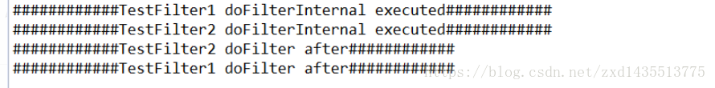
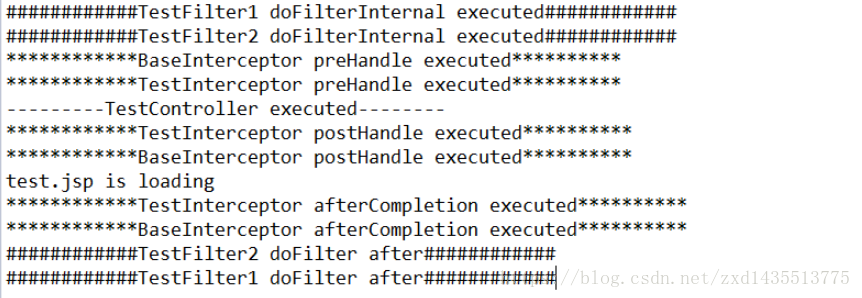
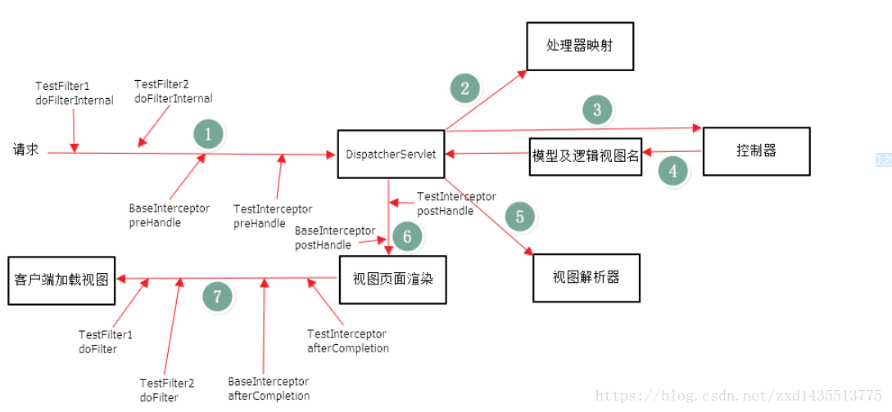

拦截器（Interceptor）和过滤器（Filter）的执行顺序和区别
过滤器（Filter）
首先说一下Filter的使用地方，我们在配置web.xml时，总会配置下面一段设置字符编码，不然会导致乱码问题：
配置这个地方的目的，是让所有的请求都需要进行字符编码的设置，下面来介绍一下Filter。
过滤器依赖于servlet容器。在实现上，基于函数回调，它可以对几乎所有请求进行过滤，但是缺点是一个过滤器实例只能在容器初始化时调用一次。使用过滤器的目的，是用来做一些过滤操作，获取我们想要获取的数据，比如：在Javaweb中，对传入的request、response提前过滤掉一些信息，或者提前设置一些参数，然后再传入servlet或者Controller进行业务逻辑操作。通常用的场景是：在过滤器中修改字符编码（CharacterEncodingFilter）、在过滤器中修改HttpServletRequest的一些参数（XSSFilter(自定义过滤器)），如：过滤低俗文字、危险字符等。
拦截器（Interceptor）
拦截器的配置一般在SpringMVC的配置文件中，使用Interceptors标签，具体配置如下：
拦截器（Interceptor）依赖于web框架，在SpringMVC中就是依赖于SpringMVC框架。在实现上,基于Java的反射机制，属于面向切面编程（AOP）的一种运用，就是在service或者一个方法前，调用一个方法，或者在方法后，调用一个方法，比如动态代理就是拦截器的简单实现，在调用方法前打印出字符串（或者做其它业务逻辑的操作），也可以在调用方法后打印出字符串，甚至在抛出异常的时候做业务逻辑的操作。由于拦截器是基于web框架的调用，因此可以使用Spring的依赖注入（DI）进行一些业务操作，同时一个拦截器实例在一个controller生命周期之内可以多次调用。但是缺点是只能对controller请求进行拦截，对其他的一些比如直接访问静态资源的请求则没办法进行拦截处理。
执行顺序
下面在一个项目中我们使用既有多个过滤器，又有多个拦截器，并观察它们的执行顺序：
（1）第一个过滤器：
（2）第二个过滤器：
（3）在web.xml中注册这两个过滤器：
再定义两个拦截器：
（4）第一个拦截器：
（5）第二个拦截器：
6）在SpringMVC的配置文件中，加上拦截器的配置：
（7）定义一个Controller控制器：
(8)测试结果：
访问 /

这就说明了过滤器的运行是依赖于servlet容器，跟springmvc等框架并没有关系。并且，多个过滤器的执行顺序跟xml文件中定义的先后关系有关
访问 /test

从这个控制台打印输出，就可以很清晰地看到有多个拦截器和过滤器存在时的整个执行顺序了。当然，对于多个拦截器它们之间的执行顺序跟在SpringMVC的配置文件中定义的先后顺序有关
Filter的执行顺序在Interceptor之前，具体的流程见下图

两者的本质区别
拦截器（Interceptor）是基于Java的反射机制，而过滤器（Filter）是基于函数回调。从灵活性上说拦截器功能更强大些，Filter能做的事情，都能做，而且可以在请求前，请求后执行，比较灵活。Filter主要是针对URL地址做一个编码的事情、过滤掉没用的参数、安全校验（比较泛的，比如登录不登录之类），太细的话，还是建议用interceptor。不过还是根据不同情况选择合适的。
ref：https://blog.csdn.net/zxd1435513775/article/details/80556034